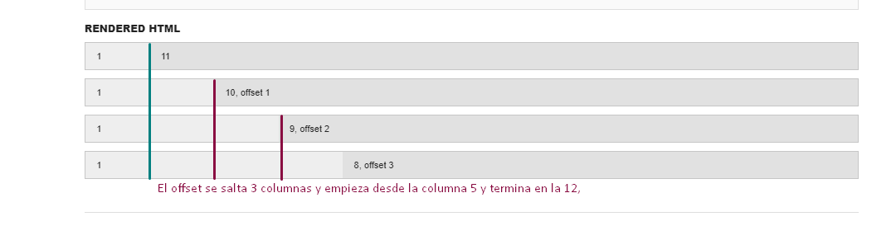

Offset
En Bootsrap offset te permite dejar espacios que anteceden a la columna en las cual se encuentra anidada. Los espacios se miden en las mismas columnas.
Offset te permite hacer un espaciado anterior a la columna, cuando la suma de todas las columnas más el offset sobrepasa los 12 Bootsrap recorre la última columna en una nueva columna.
